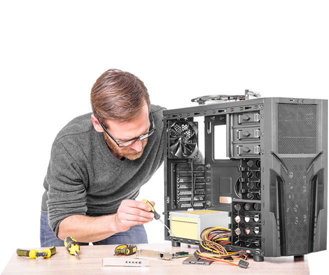

Conserto de PCs e Notebooks
Na InterPoint BP, não cuidamos apenas da sua conexão: também garantimos que seus equipamentos estejam em perfeito estado para aproveitar o melhor da internet!

Trabalhamos com manutenção e conserto de computadores desktop, notebooks e laptops de todas as marcas. Nossa equipe é altamente capacitada para diagnosticar e resolver problemas de hardware e software com agilidade e segurança.
Serviços oferecidos:
- Formatação completa com backup de dados
- Remoção de vírus, trojans e malwares
- Substituição e upgrade de peças (HD, SSD, memória, placa-mãe, etc.)
- Limpeza interna e troca de pasta térmica
- Correção de problemas de sistema e lentidão
Atendimento em domicílio
Atendemos em sua casa ou empresa com horário agendado, levando conforto, comodidade e qualidade até você. Basta solicitar um atendimento técnico e nossa equipe estará pronta para ajudar.

Além do reparo técnico, oferecemos suporte especializado para empresas que precisam de manutenção em redes locais, servidores ou computadores em ambientes corporativos.
Nosso compromisso é garantir que seus equipamentos estejam sempre prontos para o que você mais precisa: estudar, trabalhar, se divertir e se conectar com o mundo!